Verification of the n_substeps Coupling Algorithm
Objective
We are investigating the reliability and numerical consistency of the n_substeps
implementation within the coupled algorithm. This effort was motivated by an
observed discrepancy whereby the coupled simulations fail to reproduce
the topographic evolution obtained from the prescribed standalone
benchmark across a range of n_substeps values. The present experimental
design aims to isolate the source of this discrepancy and determine
whether it arises from the coupling strategy, timestep partitioning,
or another aspect of the implementation.
During the development of an uplift–diffusion benchmark for the coupled ASPECT–Landlab framework based on an existing
standalone Landlab setup, discrepancies were observed between coupled and standalone simulations when the
temporal coupling parameter n_substeps was increased beyond 1. The parameter n_substeps is a numerical coupling
parameter rather than a physical model parameter. It controls the temporal resolution of the coupling by dividing
each ASPECT–Landlab coupling timestep into multiple substeps. In the coupling algorithm, n_substeps is decleared as following
sub_dt = dt / n_substeps, where dt represents the ASPECT time.
where:
\(t_n^{\mathrm{ASPECT}}\) is the current ASPECT simulation time.
\(t_{n+1}^{\mathrm{ASPECT}}\) is the next ASPECT simulation time.
Code snippet -1: Snippet of the coupling algorithm.
1def set_mesh_information(self, ..):
2
3 self.model_grid = landlab.RasterModelGrid()
4 self.uplift_rate = (
5 self.model_grid.node_y[self.model_grid.core_cells]/ 1e5
6 )
7def update_until(self,..):
8
9 dt = end_time - self.current_time
10 if dt > 0:
11 n_substeps = N
12 sub_dt = dt / n_substeps
13 for i in range(n_substeps):
14 self.linear_diffuser.run_one_step(sub_dt)
15 self.model_grid.at_node["topographic__elevation"]
16 [self.model_grid.core_nodes] += (self.uplift_rate * sub_dt)
Although the coupling timestep dt is subdivided into smaller timesteps according to
the total elapsed simulation time over a coupling interval remains unchanged. Since n_substeps
is a numerical coupling parameter rather than a physical model parameter, varying its value should
not substantially alter the model solution for a benchmark with constant uplift rate and constant
diffusivity. In principle, the same amount of uplift is applied over the interval dt, and diffusion
acts over the same total physical time regardless of how that interval is partitioned.
However, the predicted topography varied systematically as n_substeps
increased. This indicates that the solution is sensitive to the temporal splitting of uplift and diffusion
within a coupling timestep. The experiments presented below investigate
the origin of these differences and identify suitable range of n_substeps values for coupled
ASPECT–Landlab simulations in which surface uplift is prescribed from ASPECT-derived velocity fields.
How discrepancy was identified?
When uplift is prescribed directly within the Landlab component of the coupling algorithm (code snippet-1 line number 5),
the coupled ASPECT–Landlab model reproduces the standalone Landlab benchmark only for n_substeps = 1.
Increasing n_substeps to 2, 3, 9, 15, 20, and 40 results in progressively lower
topography relative to the standalone solution, despite all simulations using identical uplift and diffusion parameters.
Method applied to investigate the origin of the discrepancy
To investigate the origin of this discrepancy, tracer statements were inserted immediately before and
after the diffusion and uplift operations within each coupling substep (code snippet 2 shows the tracer implimentation). The tracer output records the
maximum surface elevation at three stages of the update sequence: (1) before diffusion, (2) after diffusion,
and (3) after uplift. By tracking the elevation change associated with each process independently,
it is possible to determine how repeated diffusion–uplift interactions introduced by increasing n_substeps
influence the final topographic evolution.
Code Snippet 2. Tracer instrumentation used to record elevation changes before diffusion, after diffusion, and after uplift during each coupling substep.
1 for i in range(n_substeps):
2 trace(f"Starting substep {i}")
3
4 # TRACE: elevation before diffusion
5 trace(f"Before diffusion = {np.max(self.elevation)}")
6 self.linear_diffuser.run_one_step(sub_dt)
7
8 # TRACE: elevation after diffusion
9 trace(f"After diffusion = {np.max(self.elevation)}")
10 self.model_grid.at_node["topographic__elevation"][
11 self.model_grid.core_nodes
12 ] += self.uplift_rate * sub_dt
13
14 # TRACE: elevation after uplift
15 trace(f"After uplift = {np.max(self.elevation)}")
Model Setup
To evaluate the numerical behavior of the ASPECT–Landlab coupling framework, we constructed a benchmark experiment based on the standalone Landlab linear diffusion test case. The objective was to determine whether the coupled framework could reproduce the reference solution as given in tandalone Landlab linear diffusion test. Two scenarios were tested in coupled framework:
Uplift triggered from Landlab by declearing in
inport-template.pyUplift driven from ASPECT velocity field by declearing in
.prm
Case 1 : Landlab induced uplift configuration
ASPECT parameter file .prm :
The geodynamic component was implemented using ASPECT in a three-dimensional
rectangular domain with dimensions of 900 × 1900 × 1 units in the x-, y-, and z-directions,
respectively. The domain was discretized using a structured mesh consisting of 9 and 19 horizontal
repetitions in the x- and y-directions and a single element in the vertical direction,
resulting in a horizontal node spacing of 100 units. No additional global mesh refinement
was applied. Simulations were performed for a total model time of 3 time units (which is in
second by setting set Use years instead of seconds = false) using a
maximum timestep of 1.
no Stokes, no Advection non-linear solver used. The initial temperature field
was prescribed as a linear depth-dependent function between a lower boundary temperature
of 1600 K and an upper boundary temperature of 273 K. Gravity was applied vertically with
a magnitude of 1, and the incompressible Boussinesq approximation was employed. Material
properties were represented using ASPECT’s simple material model with a reference density
of 2700 kg m-3, a thermal expansion coefficient of 3 × 10-5 K-1,
a thermal conductivity of 3 W m-1 K-1, a specific heat capacity of 800 J kg-1 K-1,
and a constant viscosity of 1022 Pa s.
Surface evolution was coupled to ASPECT through the mesh deformation
framework. The top boundary of the ASPECT domain was assigned to the
Landlab mesh deformation plugin, allowing surface displacements
computed by Landlab to be transferred directly to the ASPECT mesh.
To maintain mesh quality during surface motion, tangential mesh
velocities were permitted along the lateral boundaries.
The coupling was activated in the ASPECT parameter file using:
subsection Mesh deformation
set Mesh deformation boundary indicators = top: Landlab
set Additional tangential mesh velocity boundary indicators = left, right, front, back
subsection Landlab
set MPI ranks for Landlab = 1
set Script name = import-template
end
end
Here, the top surface is controlled by the Landlab mesh deformation
plugin, while one MPI rank is allocated to execute the Landlab model.
The Python script import-template.py defines the Landlab grid,
surface-process components, and the data exchange routines used by the
ASPECT–Landlab coupling framework.
Landlab parameter file import-template.py :
The surface-process component was implemented using the Landlab landscape evolution framework. The Landlab domain covers an area of 900 m × 1900 m and is represented by a raster grid with a spacing of 100 m, resulting in 20 rows and 10 columns of nodes. All four boundaries were assigned fixed-elevation boundary conditions. The initial topography consisted of a nearly planar surface with an elevation of 0 m. To ensure reproducibility and consistency with the original Landlab benchmark, a small-amplitude random perturbation generated using a fixed random seed was added to the surface elevation field.
Surface transport was simulated using Landlab’s linear diffusion component. A constant linear diffusivity was applied uniformly across the domain:
The model was advanced using a timestep of 1 year for a total simulation duration of 3 years.
In the standalone Landlab benchmark, uplift was prescribed as
where \(y\) denotes the northward coordinate of each core node. During each timestep, diffusion was applied and uplift was subsequently added to the interior nodes. This benchmark produces a known reference topography and is commonly used to verify the correctness of the diffusion implementation.
In the coupled ASPECT–Landlab framework, all benchmark parameters, including domain geometry, grid spacing, boundary conditions, diffusivity, timestep, simulation duration, and initial topography, were retained unchanged.
Surface evolution was handled through the ASPECT–Landlab coupling interface, where vertical surface displacement from ASPECT was communicated to Landlab at every global timestep. To investigate the effect of coupling timescales, the Landlab timestep could be subdivided into multiple substeps according to
where \(\Delta t\) is the global ASPECT timestep and \(n_{\mathrm{substeps}}\) is the number of Landlab substeps executed within each coupling interval.
Case 2 : ASPECT induced uplift configuration
This experiment was designed to isolate the effect of transferring uplift from the ASPECT
to the coupling interface. All model parameters, domain geometry, mesh resolution, boundary
conditions, diffusivity, and simulation duration were kept identical to the
case 1 above. The only modifications were:
The uplift term previously prescribed directly within Landlab was disabled.
Surface uplift was instead imposed through ASPECT using a prescribed vertical velocity boundary condition.
The
Single Stokes and Single Advectionnonlinear solver was activated to compute the velocity field used by the mesh deformation framework.
The prescribed velocity boundary condition was defined in the ASPECT parameter file as:
subsection Boundary velocity model
set Prescribed velocity boundary indicators =
left: function, right: function, bottom: function
subsection Function
set Coordinate system = cartesian
set Variable names = x,y,z,t
set Function expression = 0; 0; y/1e5
end
end
This configuration imposes zero horizontal velocity and a spatially varying vertical velocity,
which produces uplift that increases linearly in the positive \(y\) direction. The resulting velocity field is incorporated into the ASPECT mesh deformation framework and communicated to Landlab through the coupling interface.
Unlike the previous benchmark, where uplift was applied directly to Landlab nodes, surface elevation changes are now induced by ASPECT through mesh deformation. Consequently, the benchmark evaluates the ability of the coupling framework to transfer ASPECT-generated surface motion to Landlab while preserving the expected uplift–diffusion behavior.
Results
n_substeps increases, tracer analysis reveals two distinct behaviours:
Constant Uplift: The magnitude of elevation change produced by the uplift code line
self.uplift_rate * sub_dt (Code Snippet 2, line 10)
remains essentially constant across all n_substeps scenarios (Figure C10 to C14).
Diffusion Response Increased Nonlinearly and Reached a Plateau: The magnitude of elevation change produced by the diffusion code line
self.linear_diffuser.run_one_step(sub_dt) (Code Snippet 2, line 6)
increases nonlinearly with increasing n_substeps before gradually approaching a plateau (Figure C10 to C14).
Interpretation
As n_substeps value increases, The effect of diffusion code line self.linear_diffuser.run_one_step(sub_dt)
becomes more pronounced, resulting in a lower topography relative to the standalone Landlab benchmark
and it stoped lowering upon further increase in n_substeps values.
Interpretation 1:
Substepping reduces operator-splitting error (indicate n_substeps is working as intented).
The agreement between the coupled and standalone solutions with
increasing n_substeps suggests that substepping is functioning
as intended (as shown in Figure 5 bellow).
Interpretation 2:
Residual discrepancies likely originate from the coupling strategy itself.
Although increasing n_substeps improves agreement with the reference
solution, a small mismatch remains, even for the best-performing case
(Figure 6, ASPECT-driven uplift case with n_substeps = 3). Because the
ASPECT and Landlab grids are geometrically identical at the coupling
interface, the discrepancy cannot be attributed to interpolation or grid
mismatch. Instead, it most likely reflects the numerical characteristics of
the coupled framework, including mesh deformation, temporal coupling, and model synchronization.
Discussion
The progressive lowering of topography as n_substeps increases and then
no further lowering with further increasing n_substeps,
can be understood as the interaction of two temporal subdivision
mechanisms acting within the coupled framework.
In Landlab induced uplift secenario:
In this benchmark recreation, the closest agreement with the standalone
Landlab reference solution is obtained when n_substeps = 1. This behavior
can be understood by considering that Landlab’s LinearDiffuser component
already contains an internal timestep subdivision mechanism through
self._tstep_ratio = dt/self._dt (diffusion.py, line 445), where
self._dt is the CFL-limited stable diffusion timestep. Whenever the
user-specified timestep exceeds the stability limit, the diffusion solver
automatically advances the solution using multiple stable internal
substeps. Consequently, diffusion is already temporally well resolved
within a single Landlab timestep.
In the coupled ASPECT–Landlab framework, an additional level of temporal
subdivision can be introduced through n_substeps > 1, which further
partitions the ASPECT coupling timestep into smaller intervals. Unlike
Landlab’s internal diffusion substepping, which is required for numerical
stability, n_substeps is intended to improve the temporal resolution of
the interaction between uplift and diffusion. Increasing n_substeps
causes diffusion and uplift to interact more frequently during a coupling
interval, allowing sediment transport to respond to intermediate uplifted
topographies rather than only the final uplifted state.
As a result, increasing n_substeps modifies the temporal coupling
behavior relative to the original standalone Landlab benchmark. Therefore,
for the specific purpose of reproducing the standalone Landlab diffusion
benchmark within the coupled framework, n_substeps = 1 provides the most
appropriate comparison because it preserves the original benchmark’s
timestep structure. This recommendation should not be interpreted as a
general guideline for coupled simulations, where larger values of
n_substeps may be beneficial for reducing operator-splitting errors and
improving temporal coupling accuracy.
In ASPECT induced uplift secenario:
In the ASPECT-defined uplift case, uplift is generated indirectly from the
surface velocity field computed by ASPECT through the Stokes and advection
solution. Under the simple material-model configuration used in this study,
the coupled solution exhibited a noticeable dependence on the temporal
coupling parameter n_substeps. Among the tested values, n_substeps = 3
produced the closest agreement with the reference topography (Figure 6,
second row, middle panel). This observation suggests that multiple coupling
substeps may be required to adequately resolve the transfer of ASPECT-derived
surface motion to the Landlab surface-process model.
Summary
LinearDiffuser component internally subdivides the requested diffusion timestep through self._tstep_ratio = dt/self._dt to satisfy the CFL stability condition. These mechanisms are primarily responsible for the stability and accuracy of their respective numerical solvers.
The parameter n_substeps serves a different purpose. Rather than stabilizing either solver, it improves the temporal accuracy of the uplift–diffusion coupling by subdividing the ASPECT timestep into smaller coupling intervals. This allows diffusion to respond more frequently to intermediate uplifted topographies and reduces the temporal discretization error associated with the operator-split coupling procedure.
Consequently, increasing n_substeps progressively lowers the predicted topography relative to simulations with fewer coupling substeps because diffusion interacts more frequently with evolving uplifted surfaces. The resulting topography approaches a limiting solution as n_substeps increases, indicating convergence of the coupling algorithm. Therefore, the observed lowering should not be interpreted as a consequence of numerical stabilization, but rather as the result of improved temporal resolution of the coupled uplift–diffusion system.
Increasing
n_substeps improves the temporal accuracy of uplift–diffusion coupling. The resulting lower topography reflects a more faithful representation of uplift–diffusion interactions and convergence toward the numerically consistent coupled solution.
Figures
Figure 1: Problem defintion
Discrepancy in Topographic Response for Between Coupled ASPECT–Landlab and Standalone Landlab in n_substeps > 1 (Greater then 1) Scenarios
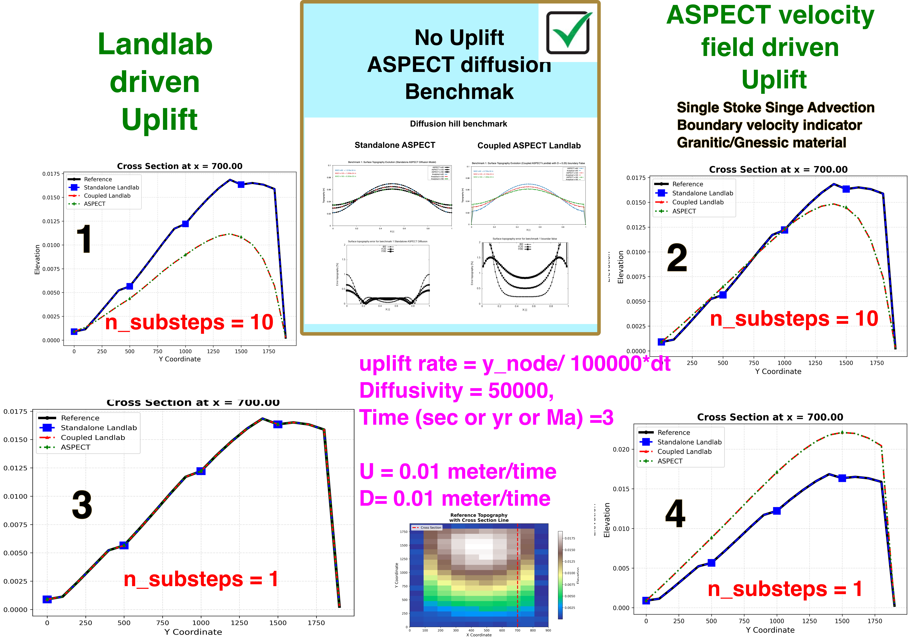
Figure 2: n_substeps Purpose
Coupling Larger Time with Shorter Time frame
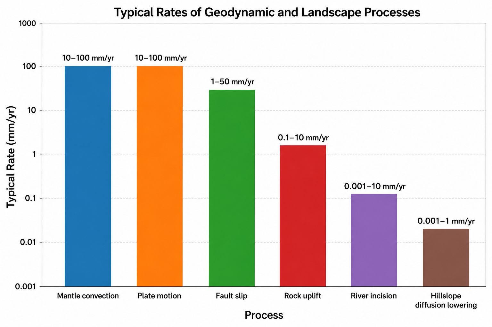
Figure 3 Hypothesis
Increasing n_substeps Should Not Change the Solution
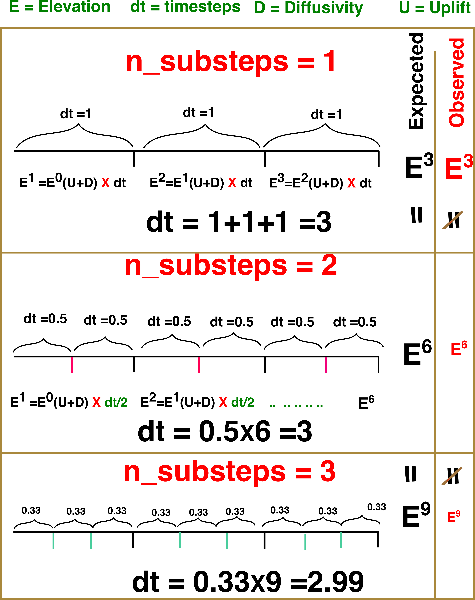
Figure 4: Thumbnail
Uplift-Diffusion Algorithm in coupled Landlab-ASPECT framework
Code snippet -1: Snippet of the coupling algorithm.
1def set_mesh_information(self, ..):
2
3 self.model_grid = landlab.RasterModelGrid()
4 self.uplift_rate = (
5 self.model_grid.node_y[self.model_grid.core_cells]/ 1e5
6 )
7def update_until(self,..):
8
9 dt = end_time - self.current_time
10 if dt > 0:
11 n_substeps = N
12 sub_dt = dt / n_substeps
13 for i in range(n_substeps):
14 self.linear_diffuser.run_one_step(sub_dt)
15 self.model_grid.at_node["topographic__elevation"]
16 [self.model_grid.core_nodes] += (self.uplift_rate * sub_dt)
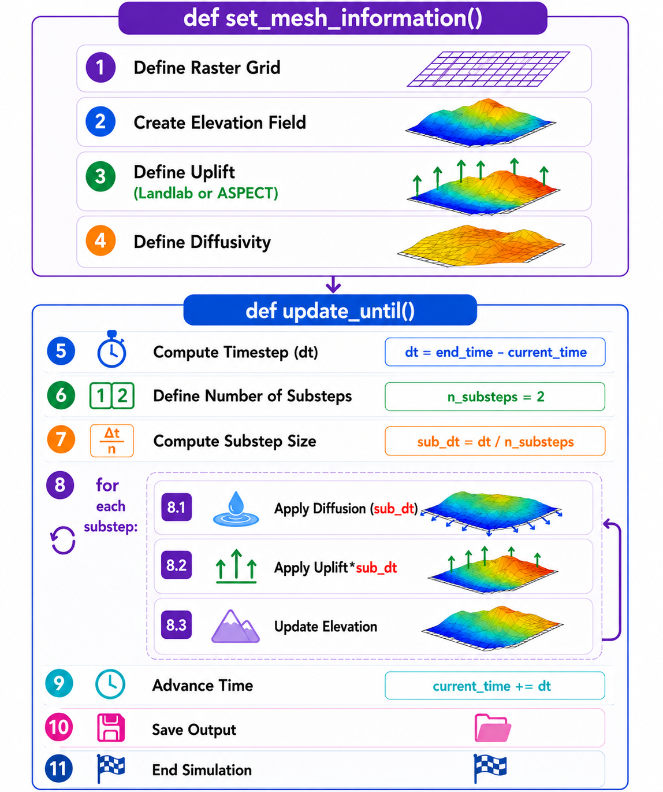
Figure 5: Operator Splitting Error (or Non-Simultaneous Process Interaction)
Isolation of Diffusion and Uplift Effects Using Elevation Tracers
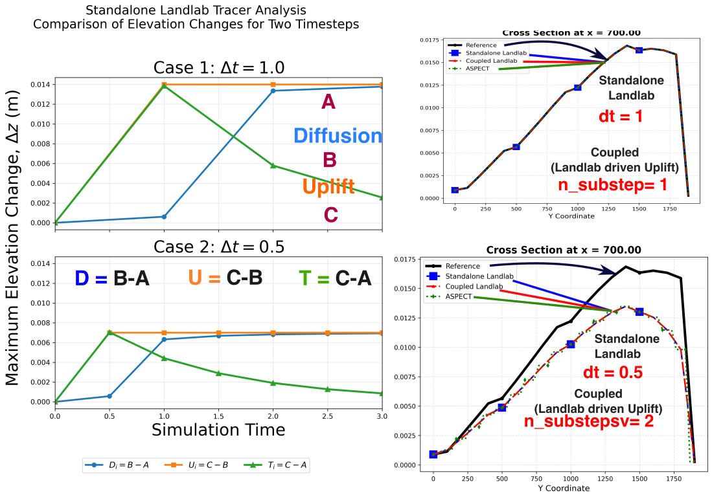
Figure 6: Summary
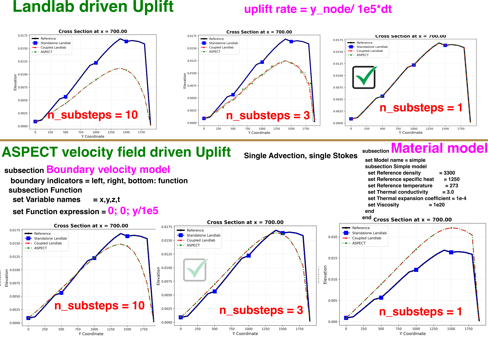
Key Inetrpretation
Increasing n_substeps improves convergence, but exact reproduction of a standalone benchmark solution should not necessarily be expected.
The coupled solution is sensitive to the choice of n_substeps because uplift and diffusion are applied as separate discrete operations. Increasing n_substeps reduces operator-splitting errors and generally improves convergence toward a temporally better-resolved coupled solution.
However, exact agreement with a standalone benchmark cannot necessarily be expected. Standalone benchmarks are typically formulated and verified within a single numerical framework, whereas the coupled ASPECT–Landlab system combines multiple numerical methods, solution procedures, and data-exchange operations. Consequently, even when the same physical process is represented, differences may arise from the numerical pathways through which information is generated, transferred, and applied within the coupled framework.
Therefore, verification of coupled models ultimately requires benchmark problems that are explicitly designed for coupled geodynamic–surface process systems. Such benchmarks should test the numerical behavior of the coupling strategy itself, including temporal coupling, data exchange, mesh deformation, and process interactions. Developing benchmark problems with analytical or otherwise independently verifiable coupled solutions remains an important direction for future work.
Complementary Experiments
Figure C1: Diffusion first THEN Uplift
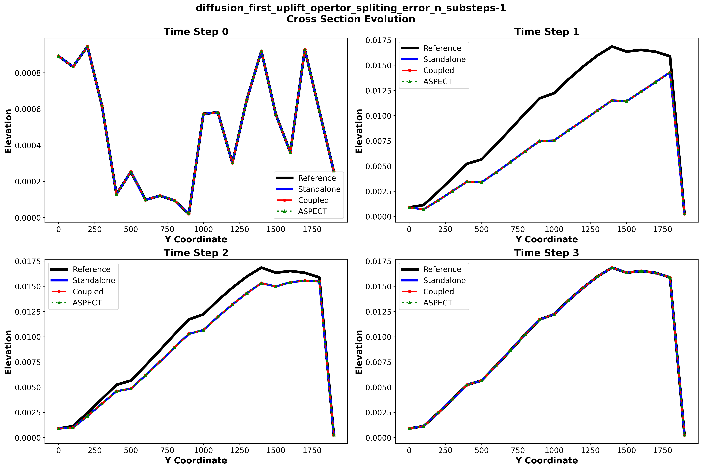
Figure C2: Uplift first THEN Diffusion
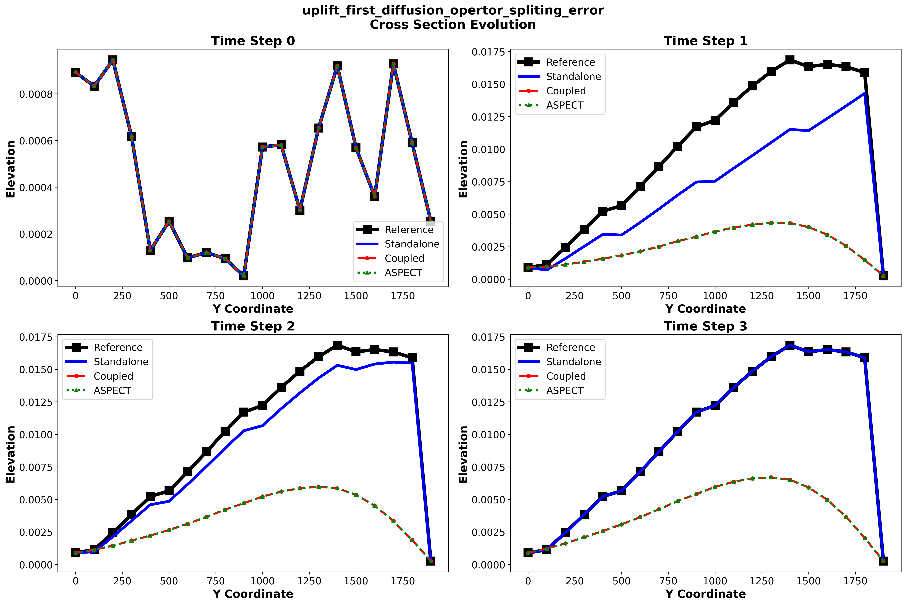
Figure C3: Ideal case scenario
Figure C4: Coupled Landlab defined uplift (No difusion) uniform Uplift
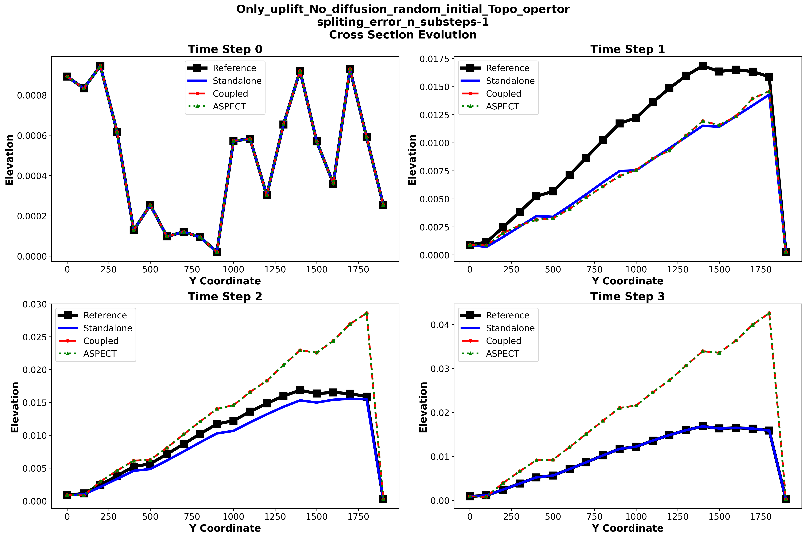
Figure C5: ASPECT defined uplift (No difusion) uniform Uplift
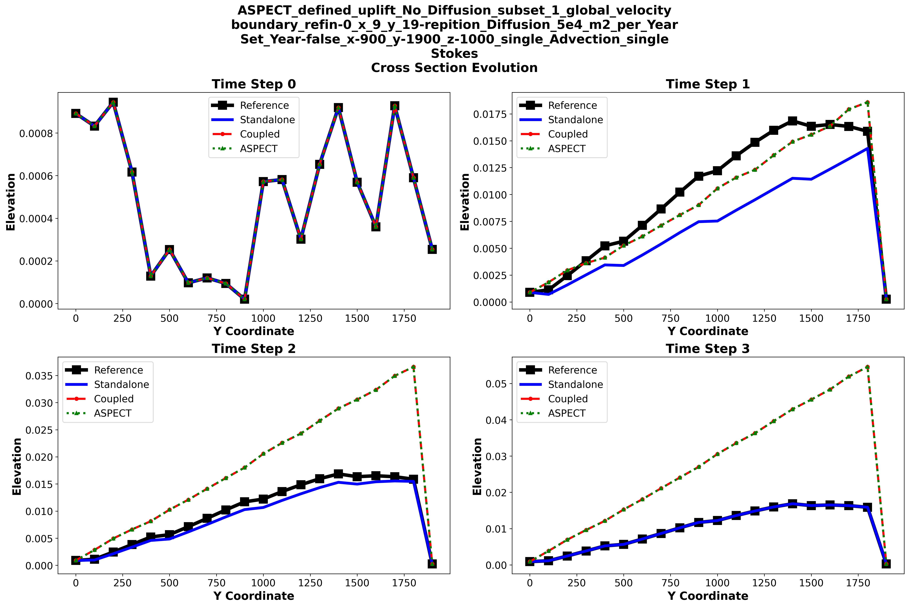
Figure C7: Uplift Implementation difference
{kind=link}
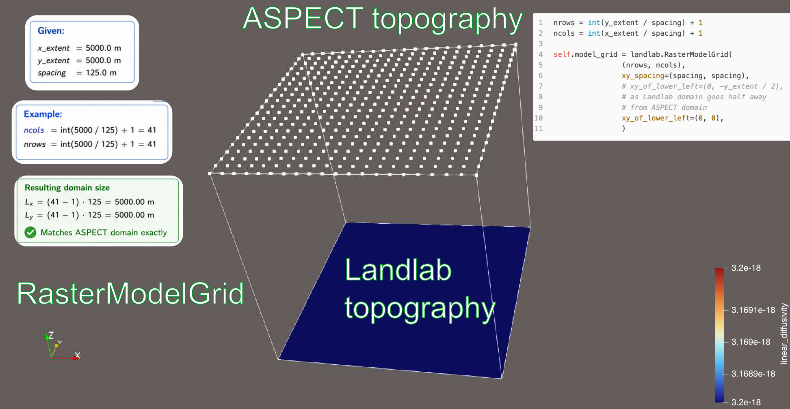
Important
Most Plausible Explanation: Uplift Implementation Differences
The most likely explanation for the remaining discrepancy between the standalone Landlab benchmark and the coupled ASPECT–Landlab solution is the fundamentally different manner in which uplift is introduced into the two modeling frameworks.
In the standalone Landlab benchmark, uplift is prescribed explicitly and applied directly at individual grid nodes. The imposed uplift field therefore enters the surface-evolution calculation without any intermediate numerical processes.
In contrast, within the coupled ASPECT–Landlab framework, uplift is generated indirectly through the geodynamic solution. Surface motion is first prescribed through the boundary velocity model and then propagated through the ASPECT solution procedure, which involves the Stokes and advection equations and depends on the evolving pressure, temperature, density, and viscosity fields. The resulting surface displacement is subsequently transferred to Landlab through the mesh-deformation interface.
Consequently, even when the prescribed boundary velocity is designed to reproduce the same uplift pattern, the uplift reaches the landscape model through a substantially different numerical pathway. Therefore, the remaining mismatch is more likely to reflect differences in uplift generation and transfer within the coupled framework than errors arising from projection, interpolation, or node-to-node mapping between ASPECT and Landlab.
Open Questions
-
Does the coupled solution converge to a unique solution as
n_substepsincreases?
Determining whether the ASPECT–Landlab solution approaches a limiting topography with increasing temporal resolution would provide direct evidence thatn_substepsfunctions as a convergence parameter rather than introducing numerical artifacts. -
What
n_substepsvalue is sufficient for practical coupled simulations?
Identifying the smallest value ofn_substepsthat produces a converged solution would provide a useful guideline for future ASPECT–Landlab studies by balancing numerical accuracy and computational cost.
Figure C8: n_substeps = 10 scenario: Crosssection of each time step (total of 4)
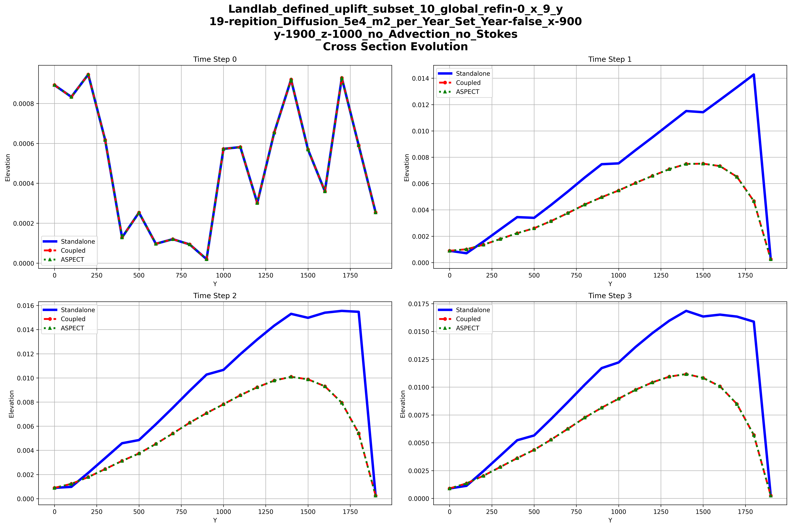
Figure C9: n_substeps = 1 scenario: Crosssection of each time step (total of 4)
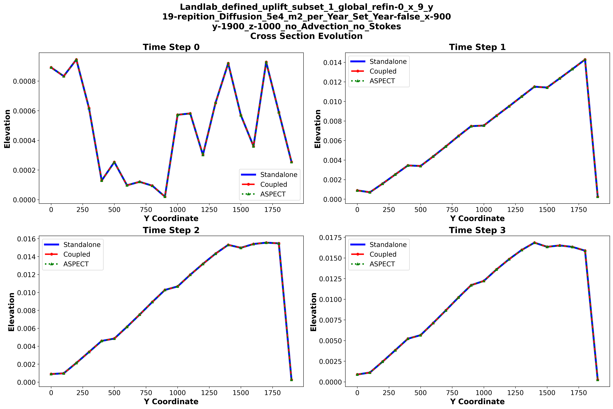
Figure C10: n_substeps = 1 scenario: Diffusion and Uplift effect on Elevation Changes
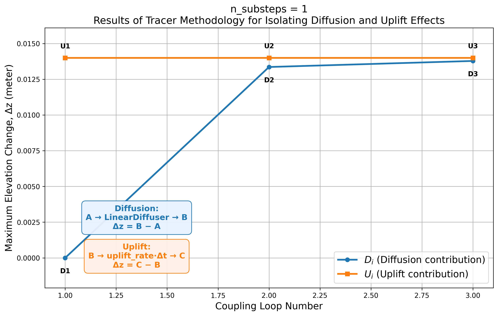
Figure C11: n_substeps = 2 scenario: Diffusion and Uplift effect on Elevation Changes
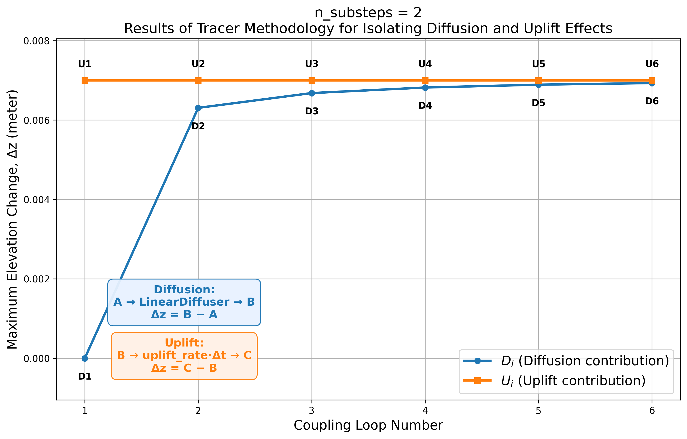
Figure C12: n_substeps = 3 scenario: Diffusion and Uplift effect on Elevation Changes
Figure C13: n_substeps = 6 scenario: Diffusion and Uplift effect on Elevation Changes
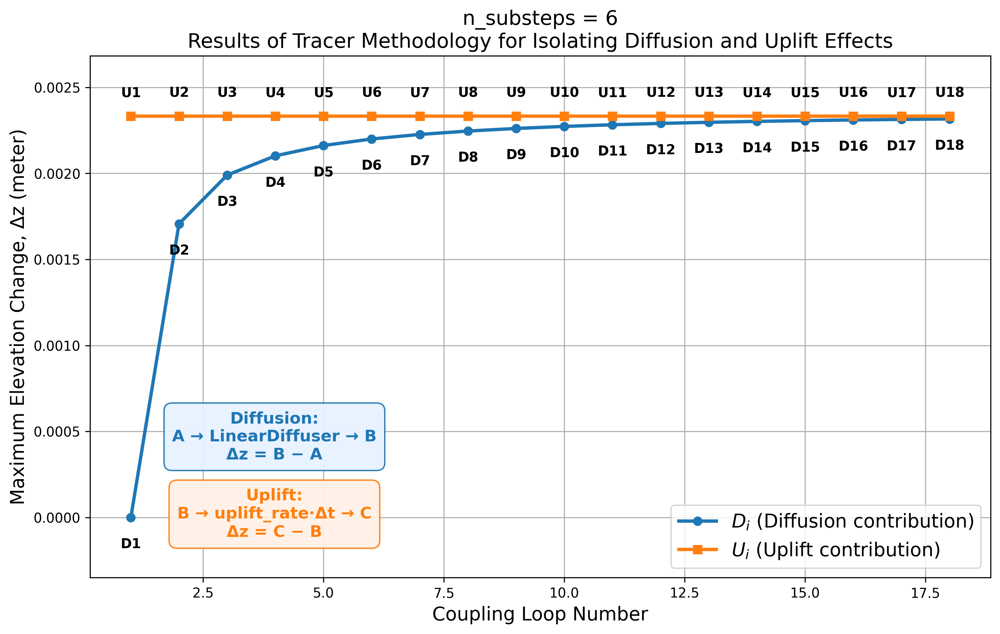
Figure C14: n_substeps = 20 scenario: Diffusion and Uplift effect on Elevation Changes
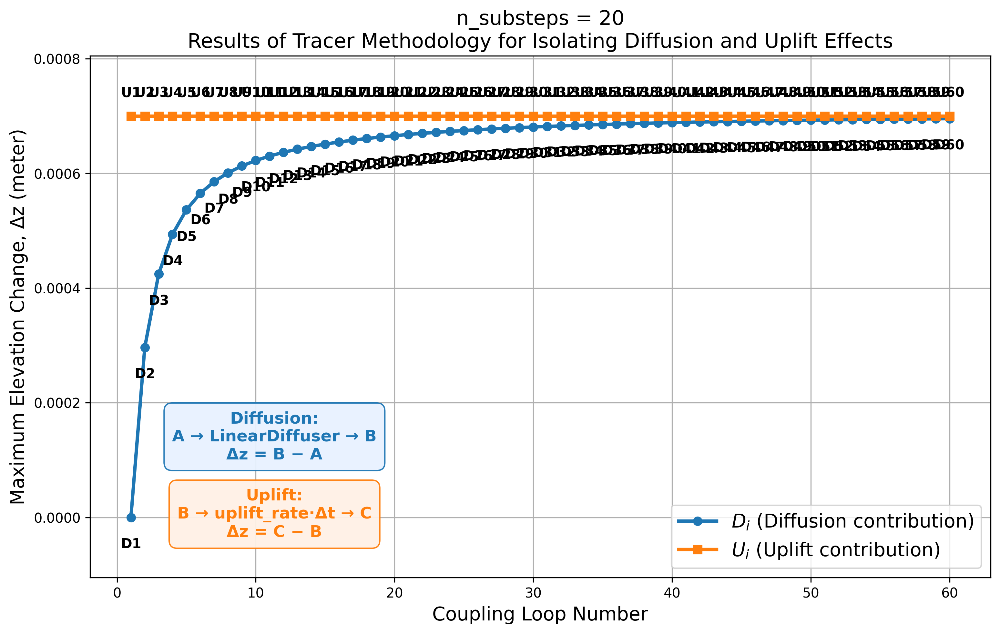